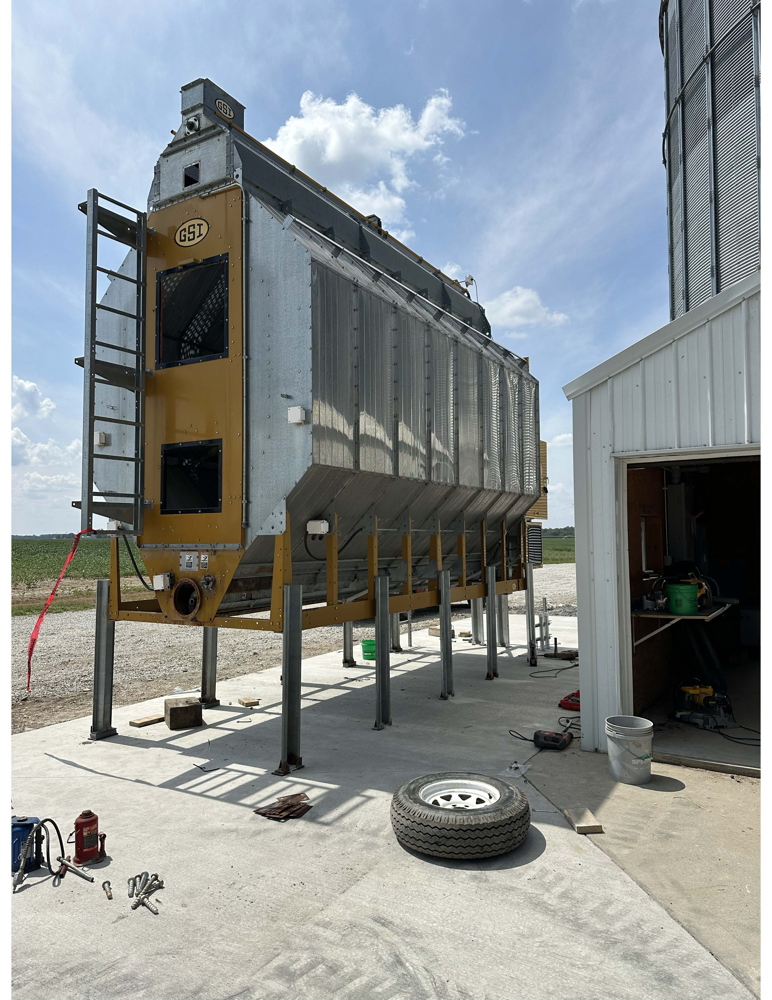

This was one of our projects this summer
working on my uncles farm. We drove to Iowa
to pick up this grain dryer.
This summer I helped crop scout fields and met with
Channel Seed customers. We talked about crop growth and the
application of fungicide.
I traveled to Visalia, California with my teammates to compete
in the National Dairy Challenge competition. We traveled to a local dairy
farm and evaluated their performance and took notes on their facilities.
We then had to create and present to a panel of judges a series of three
recomendations for the farm that could improve their overall operation, performance and efficiency.